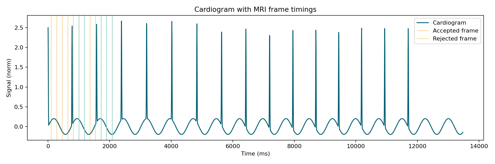
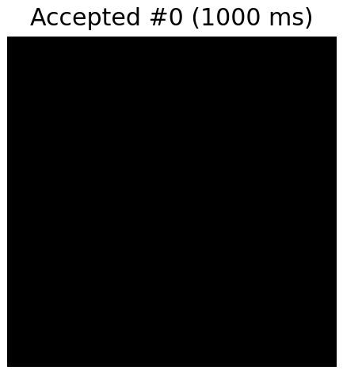
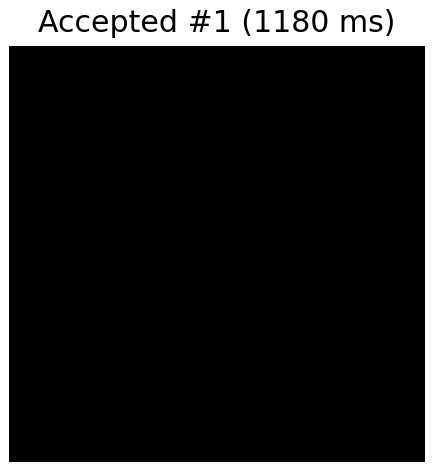
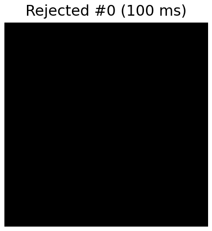
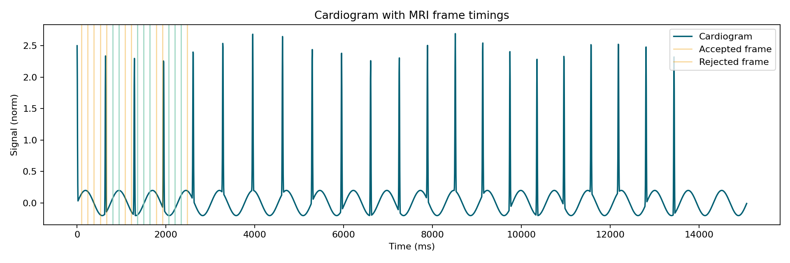
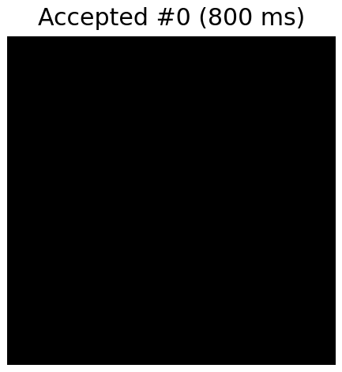
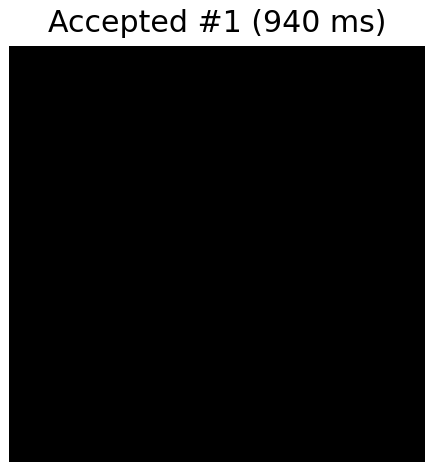

Demo Scenarios
set_a_stable
Filtered frames written to examples/demo_runs/set_a_stable/filtered_series (accepted 5, rejected 7, stable cycles 15).




Summary table: summary.txt
set_b_variable
Filtered frames written to examples/demo_runs/set_b_variable/filtered_series (accepted 8, rejected 10, stable cycles 20).




Summary table: summary.txt